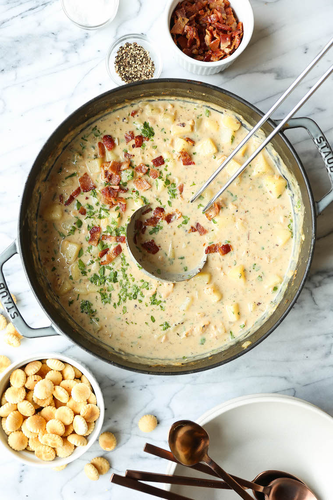

Clam Chowder

Creamy and filled with Clams
Ingredients Used
- 4 slices of diced bacon
- 2 table spoons unsalted butter
- 2 cloves of minced garlic
- 1 onion, diced
- 1/2 teaspoons dried thyme
- 3 tablespoons all-purpose flour
- 1 cup milk
- 1 cup vegetable stock
- 2 cans chopped clams
- 1 bay leaf
- 2 russet potatoes
- 1 cup half and half
- salt and freshly ground black pepper
- 2 tablespoons chopped fresh parsley leaves
Steps:
- Heat a large stockpot over medium high heat. Add bacon and cook until brown and crispy for 6 - 8 minutes.
- Melt butter into stockpot. Add garlic and onion, cook while stirring frequently until onion translucent.
- Stir in thyme. Whisk in flour until lightly brown and gradually whisk in milk, vegetable stock, clam juice and bay leaf and cook.
- Stir in potatoes. Bring to a boil, reduce heat and simmer until potatoes are tender.
- Stir in half and half and clams until heated through. Season with salt and pepper.
- If soup is too thick, add more half and half until desired consistency reached.
- Serve immediately, garnish with bacon and parsley, if desired.